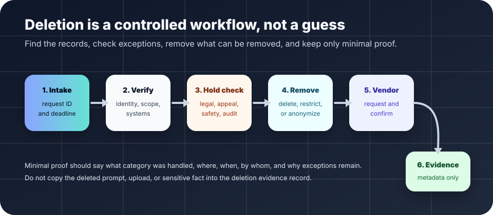

AI governance basics
AI deletion request workflow.
A practical path for receiving, triaging, confirming, and documenting requests to remove AI-related prompts, uploads, outputs, logs, embeddings, exports, and vendor-held records when deletion is allowed or required.
The short answer
An AI deletion request workflow says how a person can ask for AI-related records to be removed, who decides whether deletion is allowed, which systems must be checked, how vendors are contacted, and what evidence is kept after deletion.
This page is not legal advice. Deletion rights and duties vary by jurisdiction, sector, contract, public-records obligations, litigation hold, security needs, audit requirements, and whether a record is needed to handle an appeal, incident, complaint, or safety review.

Why AI deletion requests need a workflow
AI tools can spread records across more places than a normal form or database: prompt histories, uploaded source files, generated drafts, final outputs, audit logs, embeddings or vector indexes, evaluation examples, screenshots, tickets, shared drives, exports, backups, and vendor dashboards. If a team only deletes the obvious file, personal or sensitive information may remain elsewhere.
The ICO explains the right to erasure under UK GDPR and notes that deletion is not absolute. NIST’s Privacy Framework focuses privacy risk management on identifying, governing, controlling, communicating, and protecting data processing. The NIST AI Risk Management Framework emphasizes governance, documentation, accountability, and lifecycle risk management. OMB M-24-10 directs U.S. federal agencies to strengthen AI governance and risk management for agency AI uses. NARA contract language highlights that records responsibilities should be explicit in systems and vendor relationships.
1. Intake: make the request usable
- □ Provide a simple contact path for deletion requests: web form, email address, help desk queue, or privacy office route.
- □ Record the date received, requester contact method, affected workflow, systems named by the requester, and any deadline that may apply.
- □ Ask only for information needed to find the records and verify authority. Do not collect extra sensitive details just to process deletion.
- □ Give the requester a plain-language acknowledgement: what will be checked, who may contact them, and when to expect an update.
2. Triage: decide what can be deleted
| Question | Why it matters | Practical action |
|---|---|---|
| Who is requesting? | Some workflows need identity, guardianship, authorization, employment, school, or customer-account checks before records can be changed. | Verify enough to prevent wrongful deletion, but avoid collecting unnecessary proof. |
| Which records are in scope? | AI records may include prompts, uploads, outputs, logs, tickets, exports, embeddings, and vendor copies. | Map the request to specific systems and record categories before touching data. |
| Is there a hold or duty to retain? | Legal holds, public-records duties, audit needs, active incidents, appeals, security logs, or safety reviews can override routine deletion. | Escalate exceptions to the record owner, legal/privacy lead, or designated accountable person. |
| Can data be deleted, anonymized, or restricted? | Deletion may not be the only safe or lawful outcome; sometimes restriction, redaction, anonymization, or archival under hold is required. | Choose the least-retentive option that satisfies the valid obligation. |
| Does a vendor hold copies? | Local deletion fails if a model provider, SaaS product, analytics service, or support system keeps the record. | Use the vendor deletion path and require confirmation when contractually available. |
3. Search every likely AI record location
User-facing history
Chat history, prompt logs, uploaded files, generated drafts, summaries, transcripts, and saved outputs.
Operational systems
Tickets, case files, CRM notes, shared drives, email, collaboration docs, screenshots, exports, and local downloads.
Technical traces
Application logs, analytics, security logs, model gateway logs, embeddings, vector indexes, cache entries, backups, and monitoring tools.
Vendor-controlled areas
Provider dashboards, hosted logs, support attachments, abuse-review queues, training opt-in settings, and retention controls.
Backups may have separate retention and restoration rules. If immediate deletion from backups is not feasible, document when backup copies age out and prevent restored copies from re-entering active systems.
4. Confirm deletion without recreating the risk
- □ Record what category was deleted, from which system, by whom, on what date, and under which request ID.
- □ Keep vendor confirmation numbers or messages when available, but do not paste the deleted content into the proof record.
- □ Note exceptions separately: hold reason, approving role, review date, and what access restrictions apply while retention continues.
- □ Tell the requester the outcome in plain language: deleted, partially deleted, not found, retained under a named exception, or still awaiting vendor confirmation.
- □ If the request reveals overcollection or unclear retention settings, update the AI data minimization checklist and record retention schedule.
Bad signs
- Warning: No one can say whether prompts or uploads are used for vendor training, quality review, or abuse monitoring.
- Warning: Deletion is handled manually through screenshots, private chats, or one person’s memory.
- Warning: The team deletes a database row but leaves the same information in tickets, logs, exports, embeddings, or shared drives.
- Warning: Staff promise deletion before checking legal holds, public-records obligations, active appeals, security needs, or vendor retention limits.
- Warning: The deletion evidence stores the full prompt, uploaded document, or sensitive personal facts that were supposed to be removed.
Starter request language
For an intake page: “You may ask us to review AI-related records connected to your interaction with this service. We will check prompts, uploads, outputs, logs, and vendor-held records that are reasonably linked to your request. Some records may need to be retained for legal, public-records, security, appeal, incident, audit, or safety reasons. We will explain whether records were deleted, not found, restricted, retained under an exception, or still awaiting vendor confirmation.”
Adapt this language to local law, records policy, privacy notices, identity verification rules, vendor contracts, and user support practices before publishing it.
Sources and further reading
- UK Information Commissioner’s Office — Right to erasure.
- NIST — Privacy Framework.
- NIST — AI Risk Management Framework.
- U.S. Office of Management and Budget — M-24-10: Advancing Governance, Innovation, and Risk Management for Agency Use of Artificial Intelligence.
- U.S. National Archives and Records Administration — Records management language for contracts.